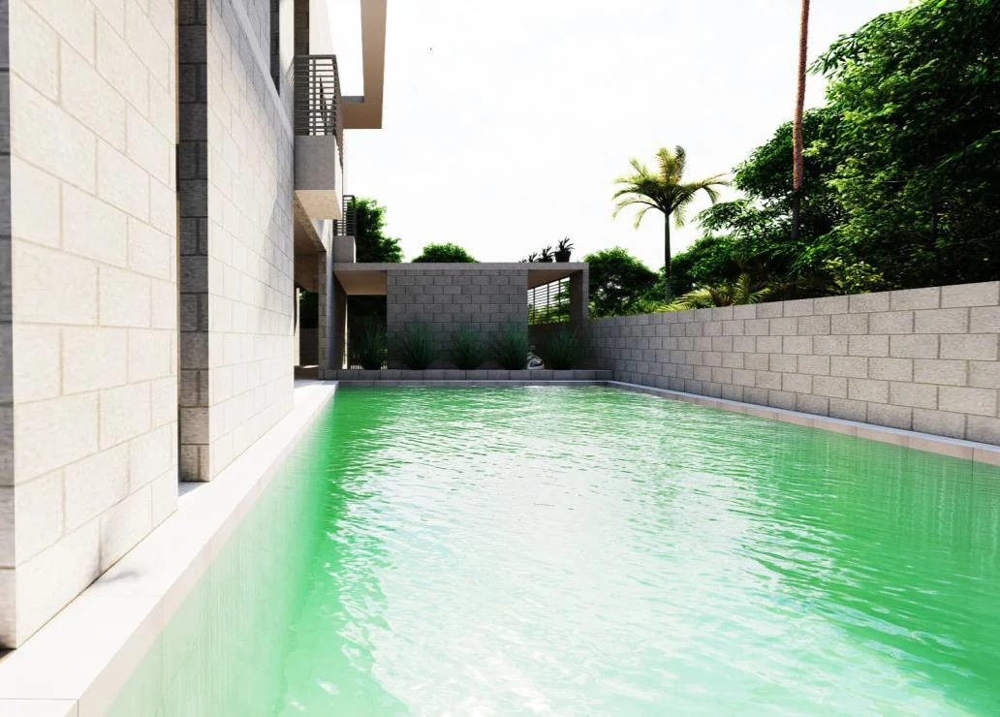
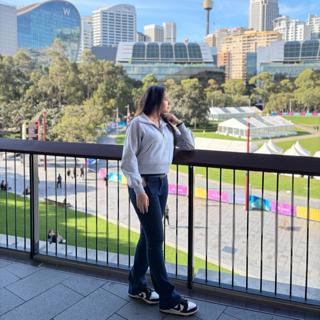

Meghna Group2 years 4 months
Architect
Planning and execution across residential, vacation-house and industrial projects; project coordination with architects and consultants.
Architecture · Interiors · Design
Based in Sydney, Australia
Rooted in Dhaka, Bangladesh
Liza Suraia / Suraia Akter
Architectural design that brings together people, place and the everyday.
Explore selected work
Thoughtful design. Considered detail.
Scroll to discover ↓01 / A selection of work
From private homes to shared spaces.
A collection of professional and academic projects.
Showing 6 of 11 projects

Liza Suraia / Sydney, Australia02 / The person behind the plans
I’m Liza Suraia, professionally known as Suraia Akter. My work connects architectural thinking with the practical care it takes to bring a project to life.
With a Bachelor of Architecture from North South University and a construction management background at CQUniversity in Sydney, I bring together design, documentation and project coordination.
My experience spans residential buildings, interiors and shared spaces in Bangladesh. I value collaboration, thoughtful problem-solving and a lasting relationship between architecture and its surroundings.
03 / Experience & approach
From early sketches and coordinated drawings
to the details that make a building work.
Areas of practice
Planning and execution across residential, vacation-house and industrial projects; project coordination with architects and consultants.
Multi-storey residential projects, with project coordination, architectural design development and detailed drawing work.
Residential and religious architecture, design documentation, construction details and construction administration.
School-building design following RAJUK requirements and graphical presentations for building projects.
The tools behind the work
04 / Start a conversation
Sydney, Australia
Architecture · Design · Collaboration